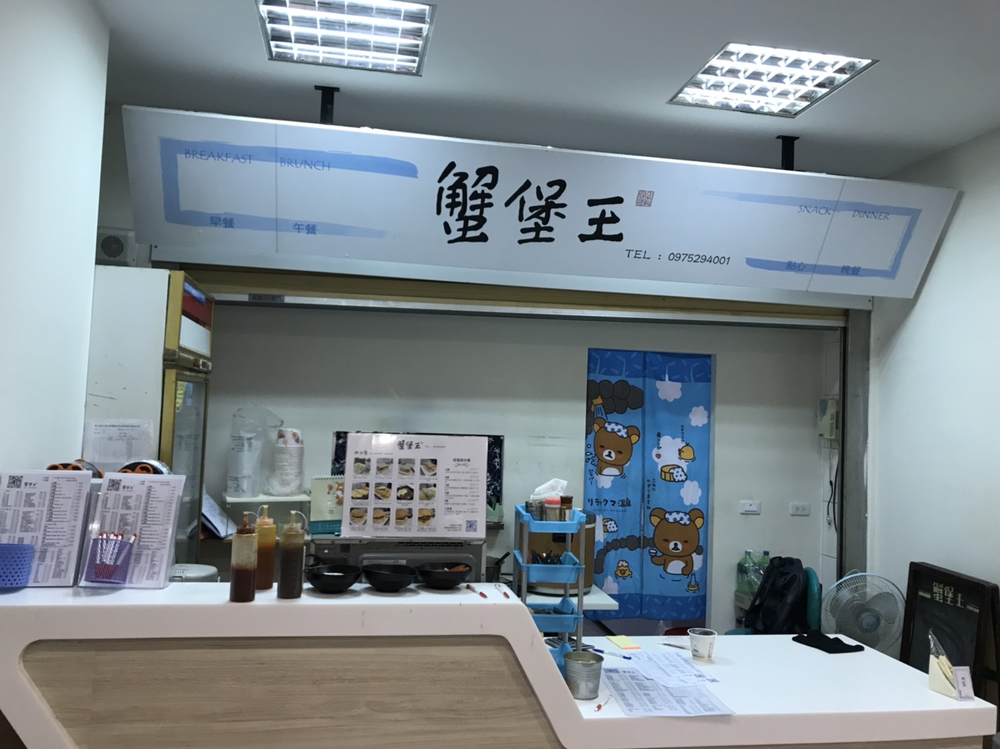

東大健康茶飲
這間茶飲店的意麵很好吃，只是有時候蒼蠅很多，而且要等很久
文成複合式餐飲
這間餐廳不錯，中午有包好的便當，而且很好吃。
巨森早餐吧
剛天亮學校開的只有這一家早餐店，6點就開門了，早上的第一推薦。
我家的店
健康均衡，麻雀雖小，五臟俱全，好吃有點小貴
東大健康自助餐
只有夾菜很便宜，但是有夾肉會變得有點貴，菜色很豐富，而且又好吃， 只是中午的時候會看到人排到一個很誇張的地步。(有附設蔬食區)
妙軒早午餐
薯餅塔很好吃，但是在人潮多的時候要等上一個多小時。
蟹堡王小吃館
種類多樣，充滿人情味，環境衛生大家看的見，有朋友在裡面工作，飲料自動加大
巴布阿甘飲食店(熊蓋讚)
有免費水果，中午有包好的便當，可以買完就走，很好吃，價格還行
東品珍牛排館
老闆人很讚，光這句話就夠了，菜色好吃
德哥麻辣燙食行

有時沒有想吃點宵夜，可以來這邊買，還算好吃。
阿森炒飯
中午的人潮很多時根本沒有位置，很好吃，只是有點油，怕油的請注意
老孟波麵食館
便宜大碗絕對讓你吃到撐、吃到死，CP值超高
書香亭
人很多，但出菜還算快速，早餐的吐司，到午餐晚餐的便當都很好吃 有附設素食(鍋邊素)
風愛廚房餐飲
基本上是會去那邊吃飯主要是看風景，平常上課比較沒有時間去那邊吃飯。
陳鶉羽簡餐
省錢，出菜速度又快，只是因某某原因它關門中。
灶咖
很有風格的一家餐廳，菜色也很好吃，唯一的缺點是離理工學院太遠了。